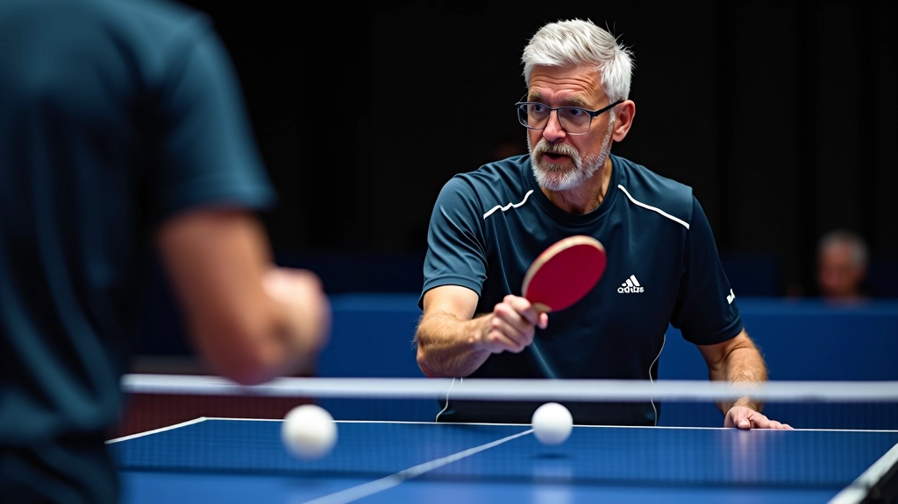
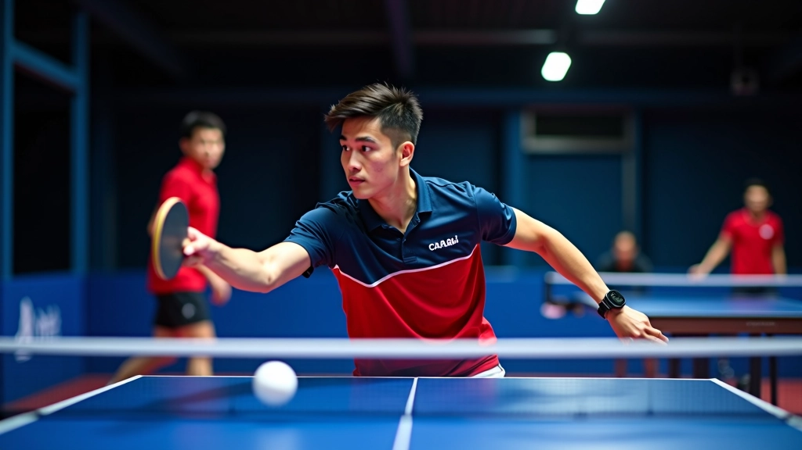
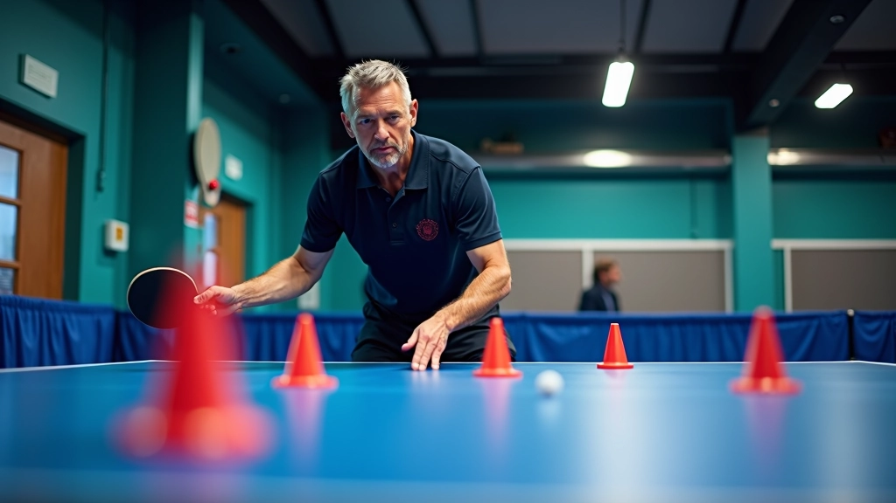
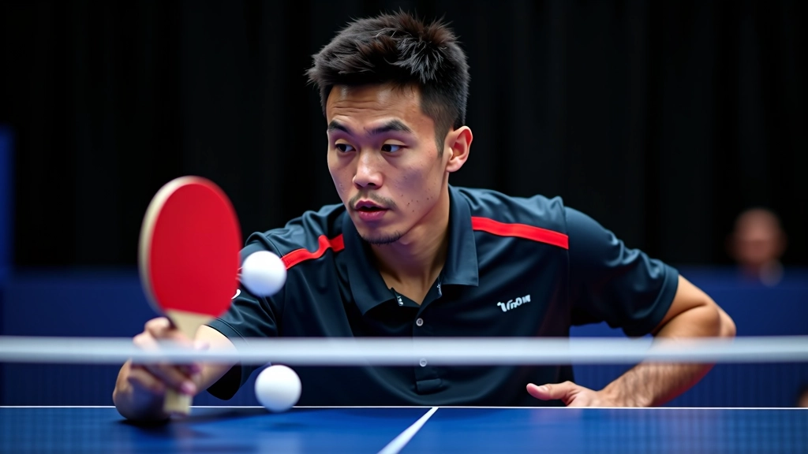

تقنيات الضربة الأمامية المتقدمة مع التغذية المتعددة
تعلم كيفية تحسين دقة ضربتك الأمامية باستخدام تمارين التغذية المتعددة بالكرات والتقنيات المتقدمة التي يستخدمها اللاعبون المحترفون.
برنامج تدريبي متخصص يركز على تحسين السرعة والتوازن والحركة الجانبية باستخدام تمارين تغذية متقدمة

كتبه
فريق التحرير والمحتوى
كتبه فريق درايف تايبل التحريري، متخصص في تقديم تمارين عملية وسهلة التطبيق لتنس الطاولة.
السرعة والتوازن الحركي يعتبران من أهم المهارات في تنس الطاولة. اللاعب الذي يتمتع بسرعة عالية في الحركة الجانبية وتوازن ممتاز يستطيع الوصول للكرة بسهولة أكبر وتنفيذ الضربات بدقة أعلى.
تمارين التغذية المتعددة توفر طريقة فعّالة جداً لتطوير هذه المهارات. عندما يتلقى اللاعب عدة كرات متتالية من المدرب، يضطر لتحريك قدميه بسرعة والحفاظ على توازنه في كل مرة. هذا يخلق ضغطاً حقيقياً يشبه ظروف المباريات الفعلية.
البرنامج التدريبي الذي نقدمه يركز على ثلاث مراحل أساسية: تطوير خطوات القدم السريعة، تحسين الثبات أثناء الحركة، والقدرة على الاستجابة السريعة للكرات المختلفة.

في البداية، نركز على تعليم اللاعب كيفية تحريك قدميه بكفاءة. خطوات القدم الصحيحة تعني أن اللاعب يستخدم خطوات صغيرة وسريعة بدلاً من الخطوات الكبيرة البطيئة.
التمرين الأساسي يبدأ بـ 5 إلى 8 كرات متتالية على الجانب الأيمن فقط. اللاعب يتحرك جانباً ويضرب الكرة، ثم يعود للمركز بسرعة لاستقبال الكرة التالية. هذا يكرر 3 مجموعات، كل مجموعة تحتوي على 8 كرات.
المدرب يغذي الكرات من منطقة قريبة من الشبكة، بسرعة معتدلة في البداية. المهم أن تكون الفترة بين الكرات كافية للاعب ليعود للمركز لكن ليست طويلة جداً.

هذا المحتوى يقدم معلومات تعليمية حول تمارين التغذية المتعددة. يُنصح باستشارة مدرب متخصص قبل البدء ببرنامج تدريبي جديد. كل لاعب له احتياجات مختلفة، والتقدم يعتمد على الممارسة المنتظمة والتغذية السليمة والراحة الكافية.

بعد إتقان خطوات القدم الأساسية، ننتقل لتحسين الثبات. هذا يعني أن اللاعب يجب أن يكون قادراً على تنفيذ ضربة قوية وسليمة حتى وهو يتحرك بسرعة.
في هذه المرحلة، المدرب يغذي الكرات بسرعة أعلى وبأماكن مختلفة. اللاعب قد يحتاج للتحرك جانباً أو للأمام، أو حتى للتراجع قليلاً. التنويع يضطر اللاعب للحفاظ على توازن أفضل في كل حركة.
نستخدم نمطاً يسمى الـ "Triangle Pattern" حيث المدرب يغذي الكرات لثلاث نقاط مختلفة: الجانب الأيمن، المنتصف، والجانب الأيسر. اللاعب يضرب الكرة من كل موضع ثم يعود للمركز. هذا التمرين يتطلب توازناً عالياً جداً.
السرعة الحقيقية في تنس الطاولة ليست فقط عن سرعة القدمين، بل عن سرعة اتخاذ القرار والاستجابة. اللاعب الجيد يجب أن يرى الكرة ويتحرك في الوقت المناسب.
في هذه المرحلة، نضيف عنصر عدم التوقع. المدرب قد يغذي الكرات بسرعات مختلفة تماماً. تارة بسرعة عالية جداً، وتارة أخرى ببطء. اللاعب يجب أن يتكيف مع كل كرة على حدة.
نمط تدريبي فعّال يسمى "Random Feeding" حيث المدرب لا يتبع نمطاً منتظماً. يغذي الكرات عشوائياً لمناطق مختلفة بسرعات مختلفة. هذا يجبر اللاعب على البقاء منتبهاً وجاهزاً في كل لحظة. 10 كرات متتالية بدون أخطاء تعتبر هدفاً جيداً في هذا المستوى.

التركيز على خطوات القدم الأساسية. 3 جلسات تدريبية في الأسبوع، كل جلسة 45 دقيقة. 5 دقائق إحماء، 30 دقيقة تمارين تغذية، 10 دقائق لعبة حرة.
إضافة تمارين الثبات والتوازن. زيادة سرعة التغذية تدريجياً. 3 إلى 4 جلسات في الأسبوع. نفس التوزيع الزمني لكن مع تمارين أكثر تقدماً.
تطبيق تمارين الاستجابة السريعة. التغذية العشوائية والسرعات المتغيرة. 4 جلسات في الأسبوع. إضافة 5 دقائق إضافية للتمرين الأساسي.
دمج جميع المراحل في جلسة واحدة. زيادة عدد الكرات المتتالية. التطبيق في ظروف مشابهة للمباريات. استمرار البرنامج مع تغييرات طفيفة.
تطوير السرعة والتوازن الحركي يتطلب التزاماً حقيقياً والممارسة المنتظمة. تمارين التغذية المتعددة توفر طريقة فعّالة وممتعة لتحقيق هذه الأهداف. الشيء المهم هو الاستمرارية والتطور التدريجي.
تذكر أن كل لاعب يتقدم بسرعة مختلفة. لا تستعجل الانتقال من مرحلة لأخرى. عندما يشعر اللاعب بالراحة في مرحلة ما، يمكن الانتقال للمرحلة التالية. الهدف هو بناء أساس قوي من المهارات الحركية.
الاستثمار في تطوير السرعة والتوازن سيعطيك ميزة حقيقية في المباريات. ستكون قادراً على الوصول لكرات يصعب على الآخرين الوصول إليها، وستتمكن من تنفيذ ضربات قوية حتى في ظروف صعبة. هذا هو ما يفصل بين اللاعبين الجيدين واللاعبين الرائعين.
تعلم كيفية تحسين دقة ضربتك الأمامية باستخدام تمارين التغذية المتعددة بالكرات والتقنيات المتقدمة التي يستخدمها اللاعبون المحترفون.

دليل شامل لفهم كيفية استخدام تمارين التغذية المتعددة لتطوير ردود الأفعال والسرعة والمهارات الأساسية في تنس الطاولة.

استراتيجيات فعالة لتنظيم جلسات تدريب جماعية باستخدام تمارين التغذية المتعددة وتطوير مهارات اللاعبين بكفاءة عالية.